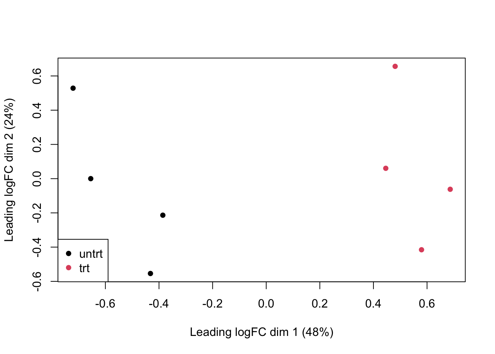

Module 4: Finding differentially expressed genes from RNAseq data
In this exercise, we will use edgeR to call differentially-expressed genes. For the example we will use an RNAseq dataset from a treatment-vehicle design.
If you haven’t already done so, install the airway dataset:
These data are from the paper:
Himes BE, Jiang X, Wagner P, Hu R, Wang Q, Klanderman B, Whitaker RM, Duan Q, Lasky-Su J, Nikolos C, Jester W, Johnson M, Panettieri R Jr, Tantisira KG, Weiss ST, Lu Q. “RNA-Seq Transcriptome Profiling Identifies CRISPLD2 as a Glucocorticoid Responsive Gene that Modulates Cytokine Function in Airway Smooth Muscle Cells.” PLoS One. 2014 Jun 13;9(6):e99625. PMID: 24926665.
From the abstract of the original paper: “Using RNA-Seq, a high-throughput sequencing method, we characterized transcriptomic changes in four primary human ASM cell lines that were treated with dexamethasone - a potent synthetic glucocorticoid (1 micromolar for 18 hours).”
Let’s load the data
These data happen to be in a Bioconductor-specific format, so we use the special functions, assay() and colData() to get the expression data and smaple information.
Questions:
* How many samples are in this experiment?
* How many genes were measured?
* How many treatment groups are there (dex column)?
Let’s created a DGEList object (DGE stands for “Differential Gene Expression”). This object is what we will use for our differential expression analysis.
Note: Make phenotype of interest categorical. In R that means converting to a factor type with categorical levels. You can think of levels as ordinal representations (e.g., first level = 1, second = 2, etc., )
If levels= are not set, the default uses alphabetical order. We recommend explicitly setting levels so that there are no assumptions.
Load the edgeR package:
Let’s create a DGEList object for the differential expression analysis. Note that group must be a categorical variable (use factor() to convert it to one):
Remove low-count genes: To filter low count genes, we’re going to use a normalized count measure called cpm (counts per million). We are going to keep genes with 100 or greater counts per million for at least two samples:
## SRR1039508 SRR1039509 SRR1039512 SRR1039513 SRR1039516 SRR1039517 SRR1039520
## ENSG00000000003 679 448 873 408 1138 1047 770
## ENSG00000000005 0 0 0 0 0 0 0
## ENSG00000000419 467 515 621 365 587 799 417
## ENSG00000000457 260 211 263 164 245 331 233
## ENSG00000000460 60 55 40 35 78 63 76
## ENSG00000000938 0 0 2 0 1 0 0
## SRR1039521
## ENSG00000000003 572
## ENSG00000000005 0
## ENSG00000000419 508
## ENSG00000000457 229
## ENSG00000000460 60
## ENSG00000000938 0Look at counts per million using cpm:
## SRR1039508 SRR1039509 SRR1039512 SRR1039513 SRR1039516
## ENSG00000000003 32.900521 23.817776 34.439705 26.906868 46.546998
## ENSG00000000005 0.000000 0.000000 0.000000 0.000000 0.000000
## ENSG00000000419 22.628193 27.379809 24.498347 24.071095 24.009743
## ENSG00000000457 12.598138 11.217747 10.375306 10.815506 10.021102
## ENSG00000000460 2.907263 2.924057 1.577993 2.308187 3.190392This next line is a bit complex so let’s unpack it:
- We are using
cpm(dge)>100as a logical test (“which genes have cpm > 100?”). - For each gene, we want that test to be true for at least two samples. For this we use
rowSums()to add up how many samples meet that criteria.
## [1] 63677 8# keep genes which have cpm>100 in 2 or more samples
tokeep <- rowSums(cpm(dge)>100) >= 2
# now filter for these
dge <- dge[tokeep,keep.lib.sizes = FALSE]
# how many genes do we have left?
dim(dge) #after## [1] 2086 8Normalize the data:
Visualize the data:
plotMDS(
dge,
col=as.numeric(dge$samples$group),
pch=16
)
legend(
"bottomleft",
as.character(unique(dge$samples$group)),
col=c(1,2), pch=16
)
Let’s create a model design to identify genes with a group effect:
Estimate variation (“dispersion”) for each gene:
Call differentially expressed genes.
Here we:
- fit a model for each gene, using
glmFit - we have built in an estimate of gene-wise dispersion to better identify treatment effect (or “contrast”)
- for each gene, we run a likelihood ratio test which compares which model fits the data better: a null model (treatment effect = 0) or a full model (treatment effect is non-zero)
Note that coef=2 fetches the effects for the treatment effect; coef=1 would fetch effects of the intercept term.

Look at the top 10 differentially expressed genes:
## Coefficient: groupuntrt
## logFC logCPM LR PValue FDR
## ENSG00000152583 -4.512108 5.950547 190.5712 2.385925e-43 4.977039e-40
## ENSG00000178695 2.592010 7.433587 171.7187 3.117449e-39 3.251499e-36
## ENSG00000120129 -2.857535 7.727638 167.2022 3.021823e-38 2.101174e-35
## ENSG00000189221 -3.213455 7.183776 162.3746 3.426477e-37 1.786908e-34
## ENSG00000125148 -2.110664 7.835949 156.1280 7.937896e-36 3.311690e-33
## ENSG00000162614 -1.938280 8.397283 135.2052 2.977497e-31 1.035176e-28
## ENSG00000101347 -3.764745 9.620058 128.9686 6.889897e-30 2.053189e-27
## ENSG00000096060 -3.849662 7.313033 123.8841 8.930961e-29 2.328748e-26
## ENSG00000134686 -1.294763 7.426574 121.0663 3.695702e-28 8.565816e-26
## ENSG00000166741 -2.072008 8.859215 114.0478 1.272045e-26 2.653486e-24For the next steps we’re going to need stats on all the genes we’ve tested. So let’s get those:
A QQplot directly compares the pvalues from our statistical tests to the expected values from a random uniform distribution (p-value selected at random).
A deviation from the x=y line (diagonal) towards the top indicates an enrichment of signal.
qqplot(
tt$PValue,
runif(nrow(tt)), # randomly sample from uniform distribution
xlab="p-values from real data",
ylab="Randomly-sampled values from Uniform distribution",
pch=16,cex=0.5
)
# x=y line as reference
abline(0,1,col="red")Now let’s call differentially expressed genes using the decideTestDGE() function and use summary() to see how many genes are upregulated (value +1), downregulated (value -1) and not called as changed (value 0)
## Warning in decideTestsDGE(diffEx, adjust.method = "BH", p.value = 0.05): 'decideTestsDGE' is deprecated.
## Use 'decideTests' instead.
## See help("Deprecated")## groupuntrt
## Down 317
## NotSig 1553
## Up 216A volcano plot can help visualize effect magnitude - log2 fold-change or log2FC in the table ` against the corresponding p-value. Here we create a volcano plot, and colour-code upregulated genes in red, and downregulated genes in blue.
Note that we are combining two different tables, tt and diffEx2 so we need to ensure the order is the same. Otherwise the colours will be in the wrong order (try it for yourself!).
midx <- match(rownames(tt), rownames(diffEx2))
diffEx2 <- diffEx2[midx,]
cols <- rep("black",nrow(diffEx2))
cols[which(diffEx2>0 )] <- "red"
cols[which(diffEx2<0)] <- "blue"
# volcano plot
plot(tt$logFC,-log10(tt$PValue),pch=16,
col=cols)
abline(v=0,lty=3)Finally we can write our differential expression results out to file: